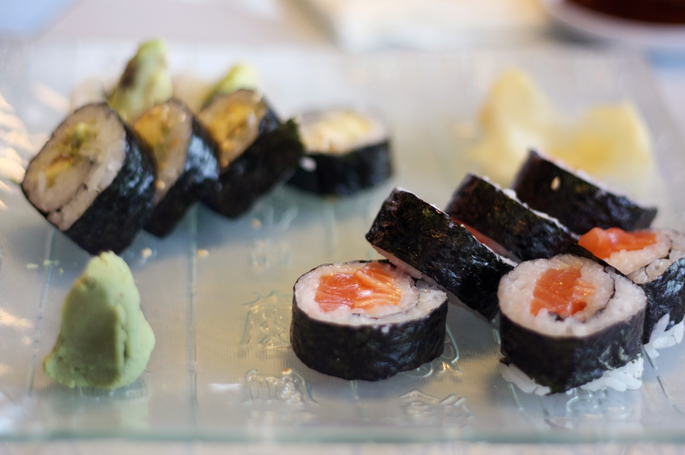

Sushi Recipe
Home

Photo by needpix.com.
Description
Ingredients
- Cooked short-grain rice
- Water
- Rice vinegar
- Sugar
- Salt
- Nori
- Wasabi
- Desired fillings or toppings
Steps
- Mix rice with water, vinegar, and sugar in a 4:4:1:1 ratio, then add 1 tablespoon of oil per 2 cups rice and salt to taste.
- Form rice into desired shape either using hands or a sushi mat
- Add nori
- Add fillings or toppings
- Wrap sushi